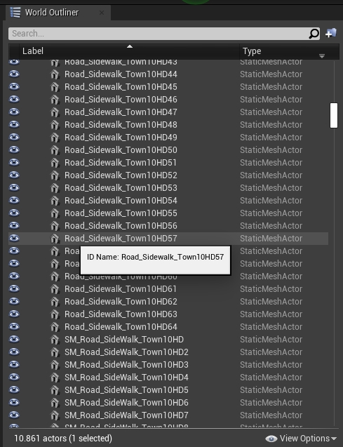

生成行人导航¶
为了允许行人导航地图，您需要生成行人导航文件。本指南详细介绍了要使用的网格以及如何生成文件。
在你开始之前¶
地图定制（添加建筑物、绘制道路、添加景观特征等）应在生成行人导航之前完成，以避免两者之间发生干扰或碰撞，导致需要再次生成行人导航。
行人导航网格¶
行人只能导航特定的网格。您需要根据下表中的术语命名要包含在行人导航中的网格：
| 类型 | 包含的名称 | 描述 |
|---|---|---|
| 地面 | Road_Sidewalk 或 Roads_Sidewalk |
行人可以自由地在这些网格上行走。 |
| 人行横道 | Road_Crosswalk 或 Roads_Crosswalk |
如果找不到地面，行人将在这些网格上行走作为第二种选择。 |
| 草地 | Road_Grass 或 Roads_Grass |
行人不会在此网格上行走，除非您指定一定比例的行人这样做。 |
| 马路 | Road_Road 或 Roads_Road Road_Curb 或 Roads_Curb Road_Gutter 或 Roads_Gutter Road_Marking 或 Roads_Marking |
行人只能通过这些网格过马路。 |
可选的行人导航选项¶
以下步骤对于生成行人导航不是必需的，但允许您在一定程度上自定义行人活动。
- 生成新的人行横道。
如果已在 .xodr 文件中定义人行横道，请避免执行此操作，因为这会导致重复：
- 创建一个平面网格（plane mesh，如果看不到，需要在“视图选项”中选中“显示引擎内容”），稍微延伸到要连接的两条人行道上。
- 将网格放置在地面上并禁用其物理和渲染。
- 将网格名称更改为
Road_Crosswalk或Roads_Crosswalk。

生成行人导航¶
1. 要防止地图太大而无法导出，请选择 BP_Sky 对象 并添加一个 NoExport 标签。如果您有任何其他不参与行人导航的特别大的网格，也请向它们添加 NoExport 标记。

2. 仔细检查您的网格名称。网格名称应以下面列出的任何适当格式开头，以便被识别为行人可以行走的区域。默认情况下，行人将能够在人行道、人行横道和草地上行走（对其余部分影响较小）：
- 人行道 =
Road_Sidewalk或Roads_Sidewalk - 人行横道 =
Road_Crosswalk或Roads_Crosswalk - 草地 =
Road_Grass或Roads_Grass

3. 按 ctrl + A 选择所有内容（报错则只选择和行人相关的网格）并通过选择 File -> Carla Exporter 导出地图。将在 Unreal/CarlaUE4/Saved 中创建 <mapName>.obj 文件。
4. 将 <mapName>.obj 和 <mapName>.xodr 移动到 Util/DockerUtils/dist。
5. 运行以下命令生成导航文件：
- Windows
build.bat <mapName> # <mapName> 没有扩展名 - Linux
./build.sh <mapName> # <mapName> 没有扩展名
6. 将创建一个 <mapName>.bin 文件。此文件包含地图上的行人导航信息。将此文件移动到包含地图的包的 Nav 文件夹中。
7. 通过启动模拟并运行 PythonAPI/examples 中的示例脚本 generate_traffic.py 来测试行人导航。
!!! 笔记
如果更新地图后需要重建行人导航 ，请确保删除 Carla 缓存。这通常可以在 Ubuntu 的主目录（即cd ~）中找到，或者在Windows的用户目录（分配给环境变量USERPROFILE的目录）中，删除名为carlaCache的文件夹及其所有内容，它可能很大。
如果关于流程有任何问题，您可以在 论坛 中提问。